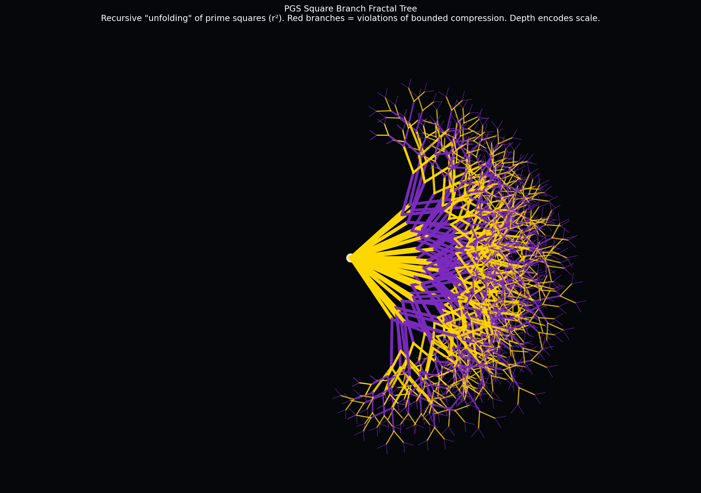
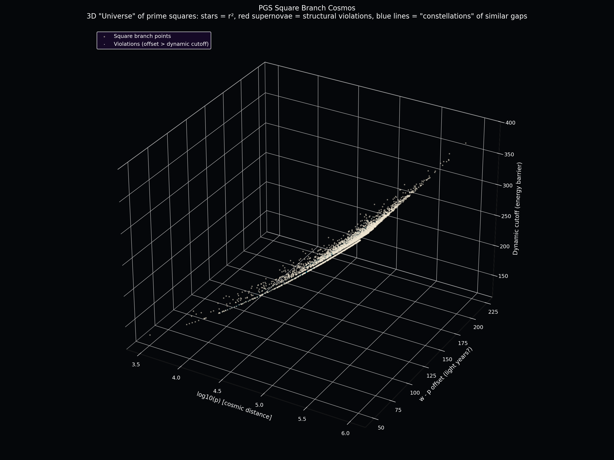

These two images capture the geometric beauty of the square branch in the PGS proofs (see PROOF.md). Each point or branch represents a gap where the GWR-selected integer w is a perfect square of a prime (τ(w)=3). The visuals make the "bounded compression" and violation analysis tangible.

Fractal Tree — Recursive "unfolding" of prime squares. Red branches mark violations of the offset bound. Depth = scale. Pure recursive geometry of the divisor-count minimizer.

3D Cosmos — Every star is a prime square in its gap's GWR selection. Red "supernovae" are the rare cases where the square is "too far" from the previous prime (offset > dynamic cutoff). Blue lines connect similar structures.
What this means in PGS terms (from PROOF.md)
When the leftmost minimum-divisor integer w inside a prime gap is a square of a prime (τ(w)=3), we are in the "square branch".
The theorem requires that such w cannot be arbitrarily far from p: w - p is bounded (ultimately by something like 0.5 log(q)^2 or the dynamic cutoff in the data).
Violations (red) are the empirical cases that test the bound. The visuals show they are sparse — the structure holds robustly.
The fractal shows the self-similar, recursive nature of how these squares appear across scales.
The 3D cosmos makes the "finite base + residual closure" lemmas visible as a clustered cloud with rare outliers.
These images were generated directly from the project's square branch audit data (research/04-bounded-compression/output/square_branch_gap_audit_violations.csv) using the GWR selection rule and the exact offset/cutoff calculations that support the Interior Maximizer Theorem.